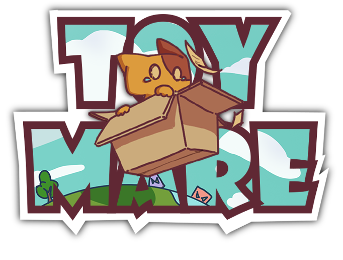
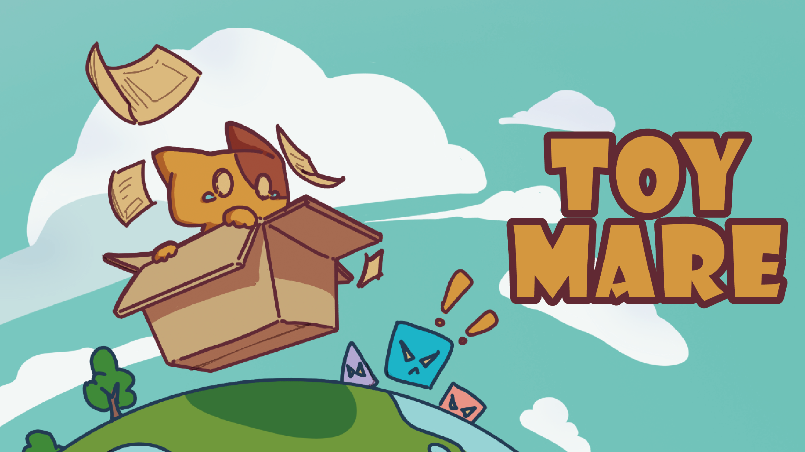
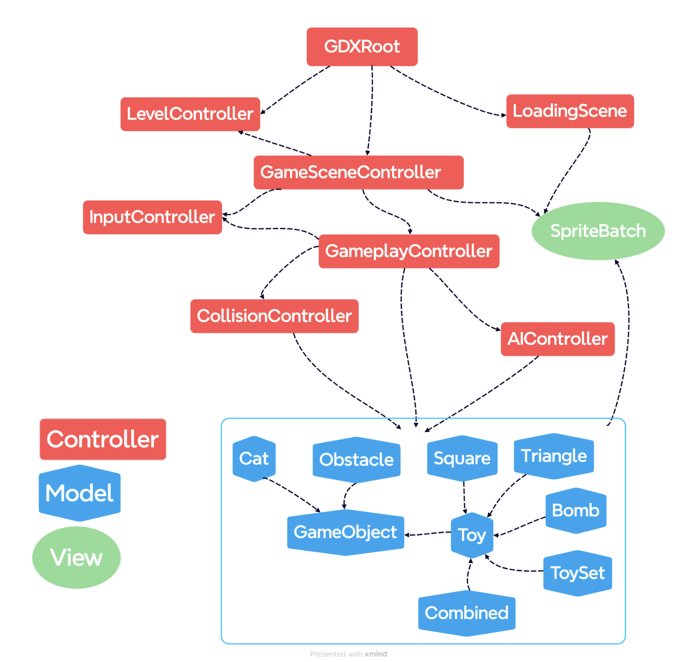
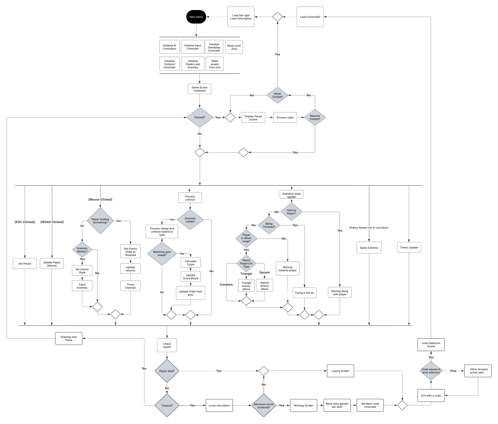

Sense of Accomplishment
For each completed order, players should feel accomplishment by revealing a new toy and seeing the score grow exponentially.
Game Design / UI & UX / Programming

A fast-moving action puzzle game about Nox, a delivery cat rebuilding order in a warehouse where every parcel has come to life.
01 / Overview
In a busy delivery warehouse, Nox the delivery cat was sorting packages as usual until a strange energy swept through, bringing every parcel to life. Now chaotic creatures are wreaking havoc, and it is up to Nox to stop them. Players fend off the rebellious parcels by quickly assembling and combining scattered toy parts into powerful constructs. Strategy, timing, and quick thinking restore order to the warehouse and keep the deliveries moving.

02 / Game Design
For each completed order, players should feel accomplishment by revealing a new toy and seeing the score grow exponentially.
Players can build deceptive toy orders in multiple ways by recognizing their structure. A goose-like shape, for example, can be completed from its head, feet, or sides, allowing flexible strategies and creative problem-solving.
Challenging puzzles and distinctive mechanics keep players engaged. They must think critically and adapt as the game progresses.
03 / Interaction
Identify the anonymous shape shown on the order board and assemble it using enemies available on the field.
Except for pink pieces, which act as erasers, each color grants a different bonus to the completed order's score.
Correct a misplaced piece by throwing an eraser at the incorrect component.
04 / Arts & Design
The menu aims for a lighthearted, cute atmosphere through animated illustration. Its motion is programmed by changing UI element offsets with oscillation constants derived from sine and cosine.
Because the story centers on delivery and packages, opening and closing a delivery box became the transition between screens. The same package language appears in the level-selection buttons.
The level-selection page uses green summer and winter themes for different chapters and music. A scrolling map invites players into Nox's journey.
05 / Engineering
Toymare follows the Model-View-Control (MVC) practice. Objects are defined in the Model layer, while interactions between models are resolved in the Control layer.

The activity diagram explains the rationale behind the main control classes, Game Scene and Gameplay Controller.

Toymare uses a built-in resource-management class and AssetsDirectory. Textures are initialized before each screen, passed to the next screen through its constructor, and read from that shared directory. A screen's directory is disposed when the player exits it. This limits the number of textures loaded at once and improves memory management during play.
Tiled is used to design 2D levels with tilesets. Toymare's grid has 45 × 23 cells; special cells identify obstacles, spawn points, and mud. The level's exported JSON is parsed to extract these fields into the GameScene class.
The OrderState enum divides the order animation into distinct states. An update method transitions between them using timers, flags, and conditions. Each state handles a step such as flipping, audio playback, or interpolated visual offsets, keeping a complex UI animation modular and predictable.
A sequential keyframe system uses state flags and timers for shake, shrink-in, shrink-out, and bounce-back stages. Each stage provides expressive visual and audio feedback when a toy combination is completed.
06 / Source Excerpts
Code excerpts are carried over from the original Toymare project page, including the Tiled parser and animation logic.
07 / Motion